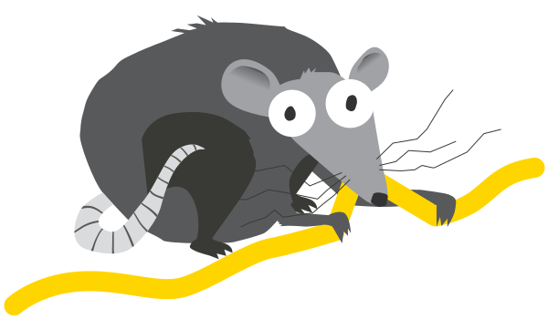
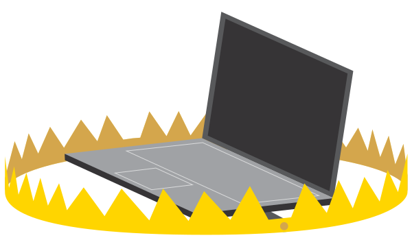
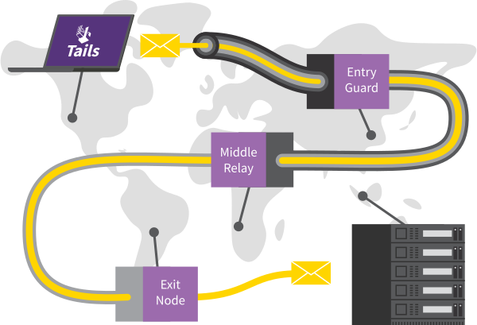

Tails is safer than any regular operating system. But Tails, or any software or operating system, cannot protect you from everything—even if they pretend to.
The recommendations below will keep you even safer, especially if you are at high risk.
Protecting your identity when using Tails

Tails is designed to hide your identity.
But some of your activities could reveal your identity:
- Sharing files with metadata, such as date, time, location, and device information
- Using Tails for more than one purpose at a time
Limitations of the Tor network
Tails uses the Tor network because it is the strongest and most popular network to protect from surveillance and censorship.
But Tor has limitations if you are concerned about:
- Hiding that you are using Tor and Tails
- Protecting your online communications from determined, skilled attackers
Reducing risks when using untrusted computers
Tails can safely run on a computer that has a virus.
But Tails cannot always protect you when:
- Installing from an infected computer
- Running Tails on a computer with a compromised BIOS, firmware, or hardware
Because you always have to adapt your digital security practices to your specific needs and threats, we encourage you to learn more by reading the following guides:
Protecting your identity when using Tails
Clean metadata from files before sharing them
Many files contain hidden data, or metadata:
JPEG and other image files often contain information about where a picture was taken and which camera was used.
Office documents often contain information about their author, and the date and time the document was created.
To help you clean metadata, Tails includes mat2, a tool to remove metadata in a wide range of file formats.
Metadata has been used in the past to locate people from pictures they took. For an example, see NPR: Betrayed by metadata, John McAfee admits he's really in Guatemala.
Use Tails sessions for only one purpose at a time
If you use Tails sessions for more than one purpose at a time, an adversary could link your different activities together.
For example, if you log into different accounts on the same website in a single Tails session, the website could determine that the accounts are used by the same person. This is because websites can tell when 2 accounts are using the same Tor circuit.
To prevent an adversary from linking your activities together while using Tails, restart Tails between different activities. For example, restart Tails between checking your work email and your whistleblowing email.
We are not aware of any such attacks to deanonymize people online who used Tails for different purposes at a time.
If you worry that the files in your Persistent Storage could be used to link your activities together, consider using a different Tails USB stick for each activity. For example, use one Tails USB stick for your activism work and another one for your journalism work.
Limitations of the Tor network
Tails makes it clear that you are using Tor and probably Tails
Everything you do on the Internet from Tails goes through the Tor network.
Tor and Tails don't protect you by making you look like any random Internet user, but by making all Tor and Tails users look the same. It becomes impossible to know who is who among them.
Your Internet service provider (ISP) and local network can see that you connect to the Tor network. They still cannot know what sites you visit. To hide that you connect to Tor, you can use Tor bridges.
The sites that you visit can know that you are using Tor, because the list of exit nodes of the Tor network is public.
Parental controls, Internet service providers, and countries with heavy censorship can identify and block connections to the Tor network that don't use Tor bridges.
Many websites ask you to solve a CAPTCHA or block access from the Tor network.
Exit nodes can intercept traffic to the destination server
Tor hides your location from destination servers, but it does not encrypt all your communication. The last relay of a Tor circuit, called the exit node, establishes the actual connection to the destination server. This last step can be unencrypted.
The exit node can:
Observe your traffic. That is why Tor Browser and Tails include tools, like HTTPS Everywhere, to encrypt the connection between the exit node and the destination server, whenever possible.
Pretend to be the destination server, a technique known as machine-in-the-middle attack (MitM). That is why you should pay even more attention to the security warnings in Tor Browser. If you get such a warning, use the New Identity feature of Tor Browser to change exit node.
To learn more about what information is available to someone observing the different parts of a Tor circuit, see the interactive graphics at Tor FAQ: Can exit nodes eavesdrop on communications?.
Tor exit nodes have been used in the past to collect sensitive information from unencrypted connections. Malicious exit nodes are regularly identified and removed from the Tor network. For an example, see Ars Technica: Security expert used Tor to collect government e-mail passwords.
Adversaries watching both ends of a Tor circuit could identify users
A powerful adversary, who could analyze the timing and shape of the traffic entering and exiting the Tor network, might be able to deanonymize Tor users. These attacks are called end-to-end correlation attacks, because the attacker has to observe both ends of a Tor circuit at the same time.
No anonymity network used for rapid connections, like browsing the web or instant messaging, can protect 100% from end-to-end correlation attacks. In this case, VPNs (Virtual Private Networks) are less secure than Tor, because they do not use 3 independent relays.
End-to-end correlation attacks have been studied in research papers, but we don't know of any actual use to deanonymize Tor users. For an example, see Murdoch and Zieliński: Sampled Traffic Analysis by Internet-Exchange-Level Adversaries.
Reducing risks when using untrusted computers
Install Tails from a computer that you trust
Tails protects you from viruses and malware on your usual operating system. This is because Tails runs independently from other operating systems.
But your Tails might be corrupted if you install from a compromised operating system. To reduce that risk:
Always install Tails from a trusted operating system. For example, download Tails on a computer without viruses or clone Tails from a trusted friend.
Do not plug your Tails USB stick while another operating system is running on the computer.
Use your Tails USB stick only to run Tails. Do not use your Tails USB stick to transfer files to or from another operating system.
If you worry that your Tails might be corrupted, do a manual upgrade from a trusted operating system.
We don't know of any virus able to infect a Tails installation, but one could be created in the future.
No operating system can protect against hardware alterations
Your computer might be compromised if its physical components have been altered. For example, if a keylogger has been physically installed on your computer, your passwords, personal information, and other data typed on your keyboard could be stored and accessed by someone else, even if you are using Tails.
Try to keep your computer in a safe location. Hardware alterations are more likely on public computers, in internet cafés or libraries, and on desktop computers, where a device is easier to hide.
If you worry that a computer might be modified:
Use a password manager to paste saved passwords. This way, you don't have to type passwords that might be visible to people or cameras near you.
Use the Screen Keyboard, if you are using a public computer or worry that the computer might have a keylogger.
Keyloggers are easy to buy and hide on desktop computers but not on laptops. For an example, see KeeLog: KeyGrabber forensic keylogger getting started.
Other hardware alterations are much more complicated and expensive to install. For an example, see Ars Technica: Photos of an NSA “upgrade” factory show Cisco router getting implant.
No operating system can protect against BIOS and firmware attacks
Firmware includes the BIOS or UEFI and other software stored in electronic chips on the computer. All operating systems, including Tails, depend on firmware to start and run, so no operating system can protect against a firmware attack. In the same way that a car depends on the quality of the road it is driving on, operating systems depend on their firmware.
Keeping your computer in a safe location can protect against some firmware attacks, but some other firmware attacks can be performed remotely.
Firmware attacks have been demonstrated, but are complicated and expensive to perform. We don't know of any actual use against Tails users. For an example, see LegbaCore: Stealing GPG keys/emails in Tails via remote firmware infection.